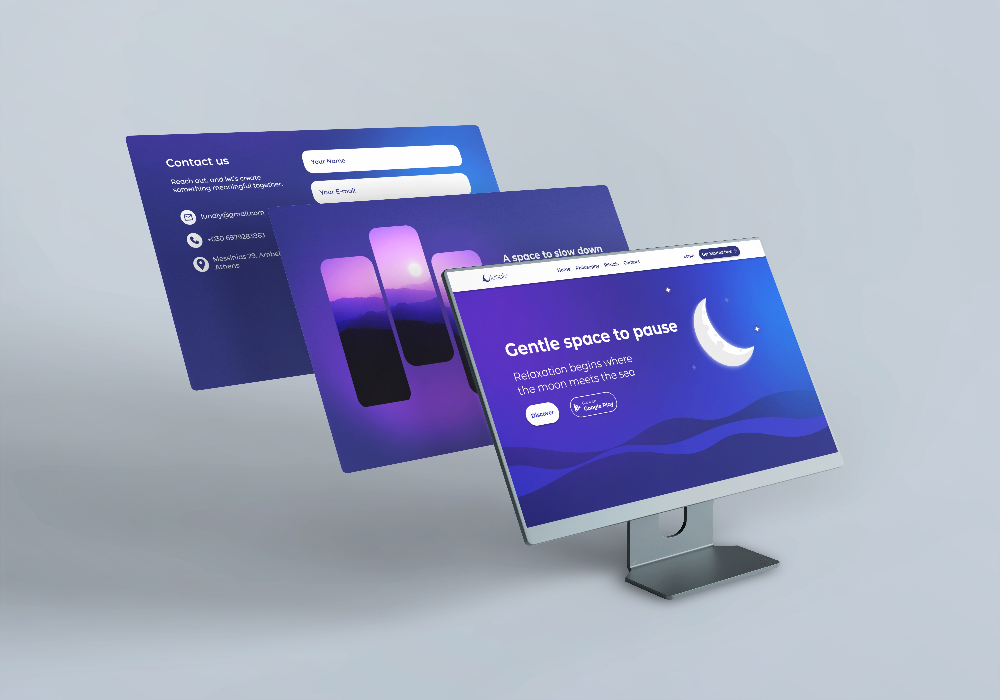
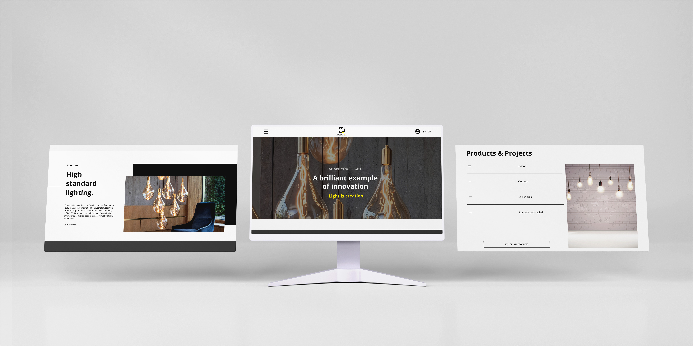

For my graduation project, I designed a complete e-commerce experience dedicated to handcrafted wooden creations. Using Adobe XD, I developed the full UI/UX design of the online shop, focusing on simplicity, warmth, and usability—reflecting the natural and authentic character of the products.
Beyond the digital interface, I also created the brand identity for the project, which included the logo design, visual guidelines, and promotional advertising materials. My goal was to establish a consistent and memorable brand presence that communicates craftsmanship, authenticity, and trust.
This project allowed me to combine my passion for design with strategic thinking, from shaping the digital user journey to crafting a visual identity that resonates with the brand’s values.
VIEW THE CASE STUDY HERE => https://par-f5561f.tiiny.site/

Lunaly is a personal concept project I designed from scratch as an experimental exploration.
I created the brand identity, visual language, and user experience, focusing on calm and clarity.
This project allowed me to experiment with branding, UI design, and interactive prototyping — bringing an idea to life step by step.
VIEW THE PROTOTYPE HERE => https://www.figma.com/proto/V7IE5kRzk73fYdCfdeox6X/Untitled?node-id=1-28&t=DoIyy7GvcXUOtwsx-1&scaling=min-zoom&content-scaling=fixed&page-id=0%3A1/
VIEW THE PROTOTYPE HERE => https://www.figma.com/proto/V7IE5kRzk73fYdCfdeox6X/Untitled?node-id=1-28&t=DoIyy7GvcXUOtwsx-1&scaling=min-zoom&content-scaling=fixed&page-id=0%3A1/
GTM Normaxis Redesign — A freelance project where the homepage was already provided.
Based on the existing design, I continued shaping the rest of the website, ensuring consistency in style and a smooth user experience.
This project gave me the chance to work within predefined guidelines while still applying creative problem-solving to complete the design
VIEW THE PROTOTYPE HERE => https://www.figma.com/proto/097Ra2fZSLCUuF62J7Ldl9/Untitled?node-id=210-214&t=NIUPeNrHIarhqrL4-1&scaling=min-zoom&content-scaling=fixed&page-id=0%3A1&starting-point-node-id=153%3A15
VIEW THE PROTOTYPE HERE => https://www.figma.com/proto/097Ra2fZSLCUuF62J7Ldl9/Untitled?node-id=210-214&t=NIUPeNrHIarhqrL4-1&scaling=min-zoom&content-scaling=fixed&page-id=0%3A1&starting-point-node-id=153%3A15

Normaxis Gloves Redesign Proposal — Following my collaboration with the same client, I created a redesign concept for their Normaxis Gloves website.
Building on the established aesthetic, I explored ways to modernize the layout and highlight the product’s quality through a clean, user-focused design.
This proposal allowed me to extend the brand’s visual language and experiment with new design directions.
VIEW THE PROTOTYPE HERE => https://www.figma.com/proto/5gd7dTCLt7Stkkd3Fsb9sT/portfolio?node-id=1-271&t=Nip1vnpJDGxC7c7L-1&scaling=min-zoom&content-scaling=fixed&page-id=0%3A1&starting-point-node-id=1%3A271
VIEW THE PROTOTYPE HERE => https://www.figma.com/proto/5gd7dTCLt7Stkkd3Fsb9sT/portfolio?node-id=1-271&t=Nip1vnpJDGxC7c7L-1&scaling=min-zoom&content-scaling=fixed&page-id=0%3A1&starting-point-node-id=1%3A271

SERICLED Redesign — A redesign project for a website focused on LED lighting solutions.
Using the references provided by the client, I developed a more modern version of the site, aiming to highlight innovation and clarity while maintaining usability.
This project was an opportunity to translate client input into a fresh, contemporary design direction.
VIEW THE PROTOTYPE HERE => https://www.figma.com/proto/xe0DKd2nvXuEc87cVwD7hm/Untitled?node-id=74-459&t=rHQYVH1Cfv2txeoJ-1&scaling=min-zoom&content-scaling=fixed&page-id=0%3A1&starting-point-node-id=1%3A256
VIEW THE PROTOTYPE HERE => https://www.figma.com/proto/xe0DKd2nvXuEc87cVwD7hm/Untitled?node-id=74-459&t=rHQYVH1Cfv2txeoJ-1&scaling=min-zoom&content-scaling=fixed&page-id=0%3A1&starting-point-node-id=1%3A256